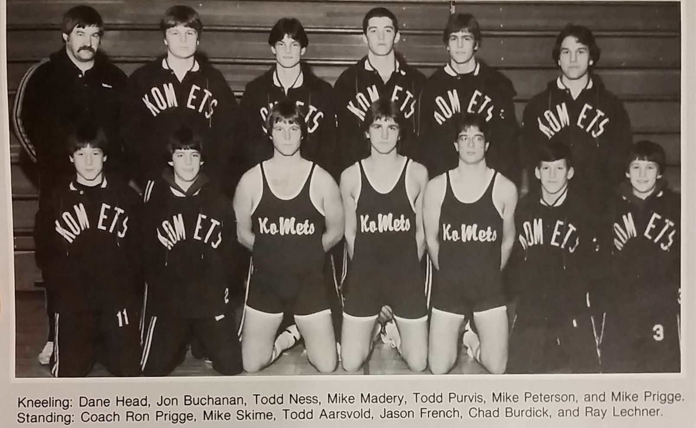

Season
1984-85
7-8Dual record
24Wrestlers
Ron PriggeHead coach

Roster
| Wt | Wrestler | Grade | Record | State |
|---|---|---|---|---|
| Nov. | 27th Kenyon | W | 33-21 | |
| Dec. | 4th Pine Island | W | 56-12 | |
| Dec. | 11th Austin Pacelli | W | 66-3 | |
| Dec. | 21st Byron | L | 42-18 | |
| Jan. | 4th St. Charles | L | 46-21 | |
| Jan. | 8th Hayfield | L | 37-23 | |
| Jan. | 11th Lake City | L | 40-16 | |
| Jan. | 15th Blooming Prairie | W | 29-12 | |
| Jan. | 17th Plainview | L | 49-10 | |
| Jan. | 25th Rochester Lourdes | W | 63-0 | |
| Jan. | 29th Dodge Center | W | 53-11 | |
| Feb. | 1st Stewartville | L | 37-18 | |
| 98# | Mike Peterson | 10th | 20-7 | |
| 105# | Todd Morrow | 8th | 1-2 | |
| 112# | Mike Prigge | 8th | 3-15 | |
| 119# | Dane Head | 9th | 25-3 | |
| 126# | Todd Aarsvold | 11th | 14-10 | |
| 132# | Joe Beth | 11th | 0-1 | |
| 138# | Todd Purvis | 12th | 15-7 | |
| 145# | Matt Prigge | 10th | 1-8 | |
| 155# | Mike Madery | 12th | 22-5 | |
| 167# | Joe French | 11th | 2-15 | |
| 185# | Todd Ness | 12th | 4-14 | |
| 285# | John McIntosh | 9th | 2-7 |
Team Results
7-8 · Click to expand
- Rochester John MarshallL42-14
- WashburnW44-18
- StewartvilleL36-30
- Nov. 27thKenyonW33-21
- Dec. 4thPine IslandW56-12
- Dec. 11thAustin PacelliW66-3
- Dec. 21stByronL42-18
- Jan. 4thSt. CharlesL46-21
- Jan. 8thHayfieldL37-23
- Jan. 11thLake CityL40-16
- Jan. 15thBlooming PrairieW29-12
- Jan. 17thPlainviewL49-10
- Jan. 25thRochester LourdesW63-0
- Jan. 29thDodge CenterW53-11
- Feb. 1stStewartvilleL37-18
Head coachRon Prigge